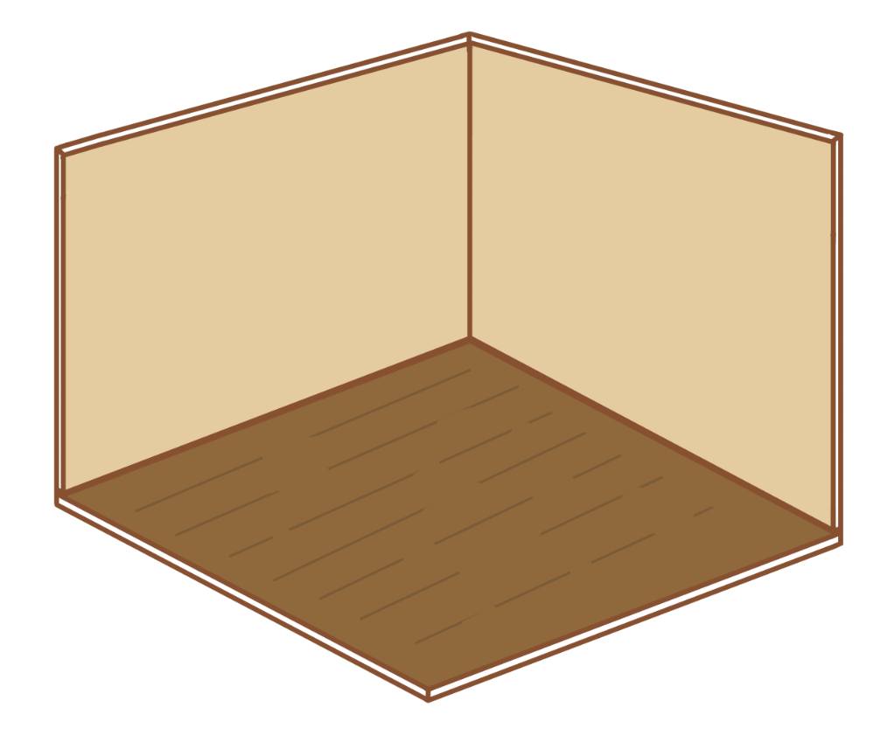

Therapet Rooms
What is a Room? It's where your Therapet lives! A Therapet's magic allows them to open a little portal to their own personal space. Everyone needs their own safe space, after all!
Rooms start off small and bare, but through activities you can make decorations to fill it up!


The maximum number of decorations you can add depends on your Rank, which can be increased through Activities and Crafting!
| Rank | Points Needed | Max Room Decorations |
|---|---|---|
| Sugar Cube | 0 | 2 |
| Jelly Bean | 10 | 6 |
| Cookie | 25 | 10 |
| Puddin' | 50 | 14 |
| Cupcake | 100 | 20 |
Designing Your room
Rooms are as unique as Therapets!It's meant to be a nice, comforting place where your Therapet can rest. You can use the stock image in this journal if you want, or you can draw your own! There are just a few rules for starter rooms:
- The walls must be cream/white color, with no patterns
- The floor must be plain brown wood
You can craft new items at the Crafting Station!
You can grow plants in the Greenhouse!
You can gather materials by Exploring!